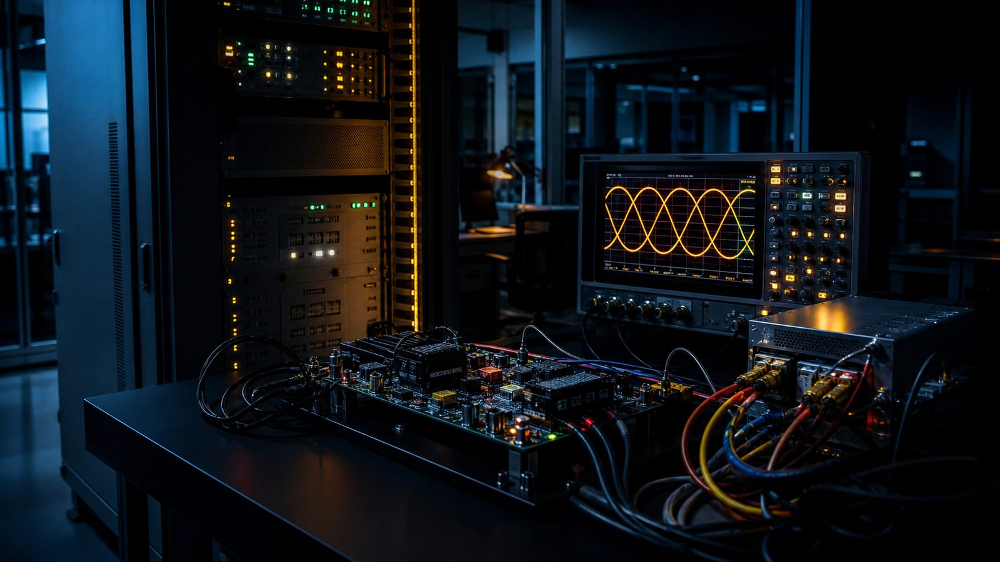

Hardware, controls, and evidence.
Built as one system.
Grid-forming conversion hardware, the firmware that makes it behave like a machine, and the validation trail that proves it to a regulator. Each is engineered against the others.
Grid-forming power conversion
The Dhruvir PCS line is a modular 100 kW building block that parallels into systems from 100 kW to 5 MW, sized for the C&I and small-utility segment that imported OEMs do not engineer for. At its core is a virtual synchronous generator (VSG) control stack: the converter emulates the swing equation of a synchronous machine, delivering synthetic inertia and damping instead of merely following the grid's phase.
The result is a converter that forms the grid where there is none, stabilizes it where it is weak, and transitions between grid-forming and grid-following operation without a bump in output.
| PCS platform / preliminary design targets | |
|---|---|
| Building block | 100 kW, paralleled to 5 MW |
| DC voltage | Up to 1500 V |
| Control core | VSG (virtual synchronous generator) |
| Grid modes | GFM, GFL, islanded, black start |
| Weak-grid stability | SCR 1.0 - 1.5 |
| Max efficiency | ≥ 98.5% |
| Current THD | < 3% at rated power |
| Overload | 1.2× / 10 s transient |
| Ambient | -10 to 50°C, full power at 50 |
| Enclosure | IP54, conformal-coated boards |
| Comms | Modbus TCP, IEC 61850, IEC 60870-5-104 |
| Grid codes | IEGC, IEEE 1547, UL 1741 SB |
* Preliminary engineering targets, subject to type-test validation. Final values published with test reports.
Compliance & validation lab

The 2026 draft regulations make evidence the customer's actual problem: EMT studies at design stage, demonstrated GFM and black start at commissioning, periodic re-verification by load despatch centres. Dhruvir's lab exists to produce that evidence, for our hardware and for anyone else's.
Controls are validated on a hardware-in-the-loop bench against a real-time grid model before any site visit. When the dispatch layer or a PCS unit ships, its behavior under faults, weak grids, and islanding has already been measured, not simulated in the marketing sense.
Dispatch & asset management
India has built the price signal for storage and almost none of the software to capture it. Dhruvir's dispatch layer re-solves charge and discharge per site, daily, against time-of-day tariffs, exchange prices, demand charges, and degradation cost. The asset-management layer underneath it tracks state of health, warranty compliance, and availability, the monthly discipline asset owners actually pay for.
The differentiator is the lab: dispatch and GFM-compliant control strategies are validated on real power hardware before deployment, so the control warranty we sign is backed by measurement.
Built for the segments imports ignore.
Bring us the grid problem your current vendor can't solve.
PCS supply, compliance evidence, or dispatch software. One engineering team, one business-day response.
Send an enquiry ->